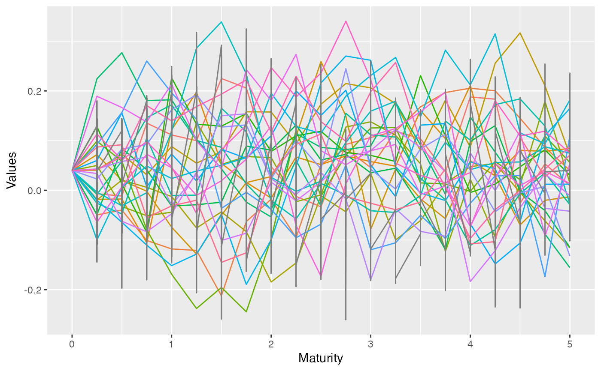
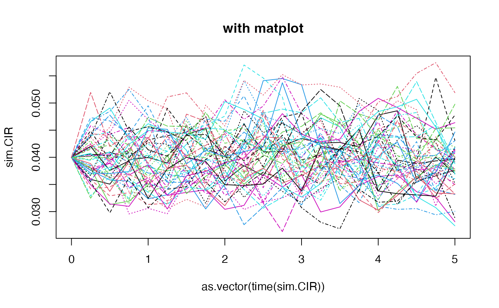

This function makes simulations of diffusion processes, that are building blocks for various risk factors' models.
simdiff( n, horizon, frequency = c("annual", "semi-annual", "quarterly", "monthly", "weekly", "daily"), model = c("GBM", "CIR", "OU"), x0, theta1 = NULL, theta2 = NULL, theta3 = NULL, lambda = NULL, mu_z = NULL, sigma_z = NULL, p = NULL, eta_up = NULL, eta_down = NULL, eps = NULL, seed = 123 )
Arguments
| n | number of independent observations. |
|---|---|
| horizon | horizon of projection. |
| frequency | either "annual", "semi-annual", "quarterly", "monthly", "weekly", or "daily" (1, 1/2, 1/4, 1/12, 1/52, 1/252). |
| model | either Geometric Brownian motion-like ( GBM-like (GBM, Merton, Kou, Heston, Bates) $$dX_t = \theta_1(t) X_t dt + \theta_2(t) X_t dW_t + X_t JdN_t$$ CIR $$dX_t = (\theta_1 - \theta_2 X_t) dt + \theta_3\sqrt(X_t) dW_t$$ Ornstein-Uhlenbeck $$dX_t = (\theta_1 - \theta_2 X_t)dt + \theta_3 dW_t$$ Where \((W_t)_t\) is a standard brownian motion : $$dW_t ~~ \epsilon \sqrt(dt)$$ and $$\epsilon ~~ N(0, 1)$$ The \(\epsilon\) is a gaussian increment that
can be an output from For 'GBM-like', \(\theta_1\) and \(\theta_2\) can be held constant, and the jumps part \(JdN_t\) is optional. In case the jumps are used, they arise following a Poisson process \((N_t)\), with intensities \(J\) drawn either from lognormal or asymmetric double-exponential distribution. |
| x0 | starting value of the process. |
| theta1 | a |
| theta2 | a |
| theta3 | a |
| lambda | intensity of the Poisson process counting the jumps. Optional. |
| mu_z | mean parameter for the lognormal jumps size. Optional. |
| sigma_z | standard deviation parameter for the lognormal jumps size. Optional. |
| p | probability of positive jumps. Must belong to ]0, 1[. Optional. |
| eta_up | mean of positive jumps in Kou's model. Must belong to ]0, 1[. Optional. |
| eta_down | mean of negative jumps. Must belong to ]0, 1[. Optional. |
| eps | gaussian shocks. If not provided, independent shocks are
generated internally by the function. Otherwise, for custom shocks,
must be an output from |
| seed | reproducibility seed |
Value
a time series object.
References
Black, F., Scholes, M.S. (1973) The pricing of options and corporate liabilities, Journal of Political Economy, 81, 637-654.
Cox, J.C., Ingersoll, J.E., Ross, S.A. (1985) A theory of the term structure of interest rates, Econometrica, 53, 385-408.
Iacus, S. M. (2009). Simulation and inference for stochastic differential equations: with R examples (Vol. 1). Springer.
Glasserman, P. (2004). Monte Carlo methods in financial engineering (Vol. 53). Springer.
Kou S, (2002), A jump diffusion model for option pricing, Management Sci- ence Vol. 48, 1086-1101.
Merton, R. C. (1976). Option pricing when underlying stock returns are discontinuous. Journal of financial economics, 3(1), 125-144.
Uhlenbeck, G. E., Ornstein, L. S. (1930) On the theory of Brownian motion, Phys. Rev., 36, 823-841.
Vasicek, O. (1977) An Equilibrium Characterization of the Term Structure, Journal of Financial Economics, 5, 177-188.
See also
Author
T. Moudiki
Examples
kappa <- 1.5 V0 <- theta <- 0.04 sigma_v <- 0.2 theta1 <- kappa*theta theta2 <- kappa theta3 <- sigma_v # OU sim.OU <- simdiff(n = 10, horizon = 5, frequency = "quart", model = "OU", x0 = V0, theta1 = theta1, theta2 = theta2, theta3 = theta3) head(sim.OU)#> Series 1 Series 2 Series 3 Series 4 Series 5 Series 6 #> [1,] 0.040000000 0.04000000 0.04000000 0.040000000 0.04000000 0.040000000 #> [2,] -0.007010219 -0.04956433 -0.01826895 0.071842481 0.04048347 -0.019585761 #> [3,] -0.011615890 -0.03983938 -0.01748681 0.019752326 0.07264790 0.020593615 #> [4,] 0.135262514 -0.10092946 -0.10564592 -0.001863971 0.03134923 0.005970775 #> [5,] 0.111386836 -0.11799548 0.12182156 -0.074206258 0.08810187 -0.012538258 #> [6,] 0.099907491 -0.12101413 0.19755359 -0.128389846 0.05456646 -0.075926539 #> Series 7 Series 8 Series 9 Series 10 #> [1,] 0.04000000 0.04000000 0.04000000 0.04000000 #> [2,] 0.04986768 0.09886257 0.12829678 -0.04918709 #> [3,] -0.03268803 0.05846365 0.01268510 0.08465305 #> [4,] -0.05110350 -0.07917464 -0.08446948 0.04136244 #> [5,] -0.04409434 -0.16895107 0.22629756 -0.03165900 #> [6,] 0.13685786 -0.23793961 0.13307614 -0.02906855# OU with simulated shocks (check the dimensions) eps0 <- simshocks(n = 50, horizon = 5, frequency = "quart", method = "anti") sim.OU <- simdiff(n = 50, horizon = 5, frequency = "quart", model = "OU", x0 = V0, theta1 = theta1, theta2 = theta2, theta3 = theta3, eps = eps0) #par(mfrow=c(2,1)) esgplotbands(sim.OU, xlab = "time", ylab = "values", main = "with esgplotbands")#> Warning: Use of `meltdf$value` is discouraged. Use `value` instead.# CIR sim.CIR <- simdiff(n = 50, horizon = 5, frequency = "quart", model = "CIR", x0 = V0, theta1 = theta1, theta2 = theta2, theta3 = 0.05) esgplotbands(sim.CIR, xlab = "time", ylab = "values", main = "with esgplotbands")# GBM eps0 <- simshocks(n = 100, horizon = 5, frequency = "quart") sim.GBM <- simdiff(n = 100, horizon = 5, frequency = "quart", model = "GBM", x0 = 100, theta1 = 0.03, theta2 = 0.1, eps = eps0) esgplotbands(sim.GBM, xlab = "time", ylab = "values", main = "with esgplotbands")eps0 <- simshocks(n = 100, horizon = 5, frequency = "quart") sim.GBM <- simdiff(n = 100, horizon = 5, frequency = "quart", model = "GBM", x0 = 100, theta1 = 0.03, theta2 = 0.1, eps = eps0) esgplotbands(sim.GBM, xlab = "time", ylab = "values", main = "with esgplotbands")